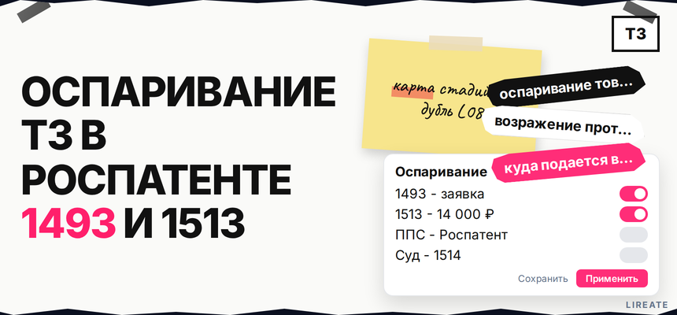

Отказ по вашей заявке, чужая публикация в реестре или уже выданное свидетельство конкурента - и в поиске везде одно слово "возражение", хотя в Роспатенте это три разных маршрута. Перепутать процедуру или срок часто дороже, чем спор по существу. Ниже вы определите роль, выберете ст. 1493, 1500 или 1512-1513, подадите документ в ФИПС и поймёте, когда после ППС нужен суд, а не наоборот.

TL;DR / Быстрый инсайт: Оспаривание в Роспатенте - это не один документ, а три административных входа: обращение третьего лица на экспертизе (ст. 1493 ГК РФ, до решения о регистрации); возражение заявителя на отказ или иное решение по своей заявке (ст. 1500, 4 месяца, пошлина 9 000 руб. по п. 2.28.2); возражение против охраны чужого свидетельства (ст. 1512-1513, 14 000 руб. по п. 2.28.4, сроки по ст. 1512). Подача - почта, приёмная ФИПС или электронно через официальный сайт (Правила 644/261). Суд по ст. 1248 - после решения Роспатента по спору в ППС, а не вместо пропущенного срока на возражение.
ППС (Палата по патентным спорам) рассматривает возражения; обращение по ст. 1493 учитывают на экспертизе (ст. 1499). Материал на 30.10.2026 не заменяет консультацию поверенного.
Поисковые запросы вроде "возражение против регистрации товарного знака" и "куда подается возражение на заявку" часто ведут к одной странице регистрации, а не к спорам. В административном смысле оспаривание - это документ в Роспатент по Правилам ППС, а не мониторинг маркетплейса или переписка с правообладателем.
В смысле ГК РФ оспаривание - подача в Роспатент по ст. 1493, 1500 или 1512-1513, а не переписка с конкурентом. Делайте: выпишите номер и статус в Поисковой платформе или реестре ФИПС. Не делайте: подменять возражение претензией правообладателю.
| Кто вы | Что оспариваете | Документ | Норма | Срок | Пошлина |
|---|---|---|---|---|---|
| Любое лицо (часто конкурент) | Чужая заявка на экспертизе | Обращение | ст. 1493 | После публикации заявки и до решения о регистрации | Отдельной 2.28.4 нет; ознакомление с материалами заявки - по тарифу 2.27 |
| Заявитель по своей заявке | Отказ, частичная регистрация, отзыв и др. | Возражение заявителя | ст. 1500 | 4 месяца с направления решения (с оговоркой про запрос копий за 2 месяца) | 9 000 руб. (п. 2.28.2) |
| Заинтересованное лицо | Уже выданная охрана чужому знаку | Возражение против предоставления охраны | ст. 1512, подача ст. 1513 | 5 лет с публикации регистрации (п. 6, 7, 10 ст. 1483) или весь срок охраны (п. 1-5, 8, 9) | 14 000 руб. (п. 2.28.4) |
Делайте: сохранить таблицу в рабочей папке дела и отметить дату старта срока из уведомления Роспатента. Не делайте: платить 14 000 руб. по п. 2.28.4, если спор только по своему отказу - там другая пошлина и ст. 1500.
Если вы заявитель и получили отказ по относительным основаниям (сходство с чужим знаком), разбор доводов на экспертизе и в ППС ближе к материалу об отказе по своей заявке; здесь фокус на том, куда и в какой срок подать именно возражение заявителя, а не на перечень всех оснований отказа.
Схема выбора: статус в реестре → заявка без регистрации = обращение (1493) → решение по вашей заявке = возражение заявителя (1500, 9 000 ₽) → чужое свидетельство = возражение против охраны (1512-1513, 14 000 ₽) → не согласны с итогом ППС = суд (1248)
По п. 4 Правил 644/261 подойдут почта, приёмная ФИПС и подача через rospatent.gov.ru. Делайте: один комплект на один знак (п. 5-6), сохраните квитанцию. Не делайте: объединять два спора в один файл.
Срок - 4 месяца с направления решения Роспатентом (п. 1 ст. 1500); при запросе копий противопоставлений в первые 2 месяца отсчёт может сдвинуться. Пошлина - 9 000 руб. (п. 2.28.2). Делайте: календарь от даты в уведомлении. Не делайте: ждать "удобного" получения письма курьером.
На экспертизе - обращение (ст. 1493), после регистрации - возражение (ст. 1512-1513, 14 000 руб.). Доказательства и срок 5 лет по сходству - в гайде возражение против регистрации чужого товарного знака. Делайте: поиск коллизий, как при проверке перед подачей. Не делайте: путать это с возражением по своему отказу (ст. 1500).
Делайте: фиксировать входящий номер и дату заседания. Не делайте: пропускать отзыв правообладателя.
Сначала административный порядок у Роспатента (ст. 1248 п. 2), затем суд против решения ППС (ст. 1513 п. 4). Делайте: обжаловать итог коллегии в срок. Не делайте: идти в суд вместо пропущенного возражения - восстановление по ст. 1501 не гарантировано.
После выбора процедуры имеет смысл настроить мониторинг реестра, чтобы не пропустить публикацию конкурента или решение по своей заявке. Лирейт помогает с защитой товарного знака и репутации бренда и подготовкой пакета в Роспатент без обещений исхода коллегии. Больше материалов по рубрике - в разделе "Товарный знак". При споре с крупным контрагентом подключайте патентного поверенного до оплаты пошлины; формы возражений и образцы - на fips.ru в разделе ППС.
Материал проверен: редакция Лирейт, практика споров по товарным знакам в Роспатенте и ППС.
Достоверность данных: ст. 1493, 1499, 1500, 1512, 1513, 1248 ГК РФ, Правила подачи возражений (приказ № 644/261), пошлины п. 2.28.2 и 2.28.4 сверены с КонсультантПлюс, ГАРАНТ и rospatent.gov.ru на 30.10.2026. Показы Яндекс Вордстат в среде подготовки материала не запрашивались.
Документ направляют в Роспатент (ФИПС как структура приёма). Допустимы почта, окно приёма и электронная подача через официальный сайт по Правилам 644/261. Сохраните доказательство даты отправки и дождитесь входящего номера.
Ст. 1500 - это ответ заявителя на решение по своей заявке (отказ и др.), срок 4 месяца и пошлина 9 000 руб. Возражение по ст. 1512-1513 подаёт заинтересованное лицо против уже выданной охраны чужому знаку, пошлина 14 000 руб. и иные сроки по ст. 1512.
Для решений Роспатента по возражениям в ППС суд - следующий этап после административного рассмотрения (ст. 1248, 1513 п. 4). Пропуск срока на возражение судом обычно не компенсируется; ориентируйтесь на подачу в Роспатент в срок.
Четыре месяца с даты направления решения Роспатентом, с особенностями, если вы запросили копии противопоставлений в первые два месяца. Проверьте дату в официальном уведомлении и не откладывайте оплату 9 000 руб.
9 000 руб. (п. 2.28.2) - возражение заявителя по ст. 1500 на решение по своей заявке. 14 000 руб. (п. 2.28.4) - возражение против предоставления правовой охраны зарегистрированному знаку по ст. 1513. Обращение по ст. 1493 не оплачивается по п. 2.28.4.
Отдельной пошлины за само обращение по ст. 1493 в таблице 2.28.4 нет. Платные услуги могут касаться, например, ознакомления с материалами заявки по другим пунктам тарифа - сверьте актуальную таблицу на rospatent.gov.ru.
После регистрации документа следите за уведомлениями Роспатента и материалами дела на fips.ru и rospatent.gov.ru; первое заседание назначают в пределах сроков п. 26 Правил 644/261. Отзыв правообладателя должен поступить не позднее чем за 10 рабочих дней до заседания.